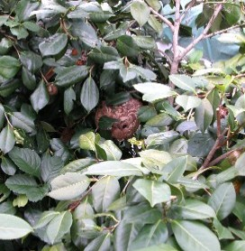
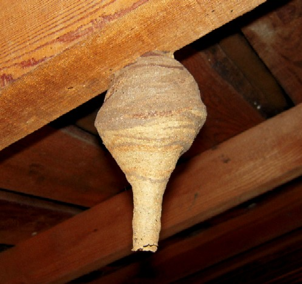
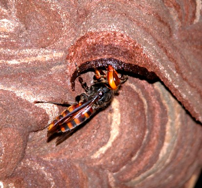

コガタスズメバチ
（Vespa analis Fabriciusi）
・庭木の中、屋根の軒下など開放空間にバレーボールくらいの巣を作る。
・オオスズメバチを一回り小さくしたようなスズメバチで、黄色と黒の縞模様。
・おとなしいスズメバチで、巣に近付いても攻撃はしてこない事が多い。
コガタスズメバチと聞くと、小さいスズメバチ？と思ってしまうかもしれませんが、特に大きさが小さいわけではなく、大きさ的には、キイロスズメバチよりも大きいです。どうやらオオスズメバチと比べてこの名前が付いたのでは、と思います。
コガタスズメバチの体長は女王蜂で25～29ｍｍ、働き蜂は21～27ｍｍ、雄蜂は22～26ｍｍになります。
一見すると、ちょうどオオスズメバチをそのまま小さくしたスズメバチのようです。
コガタスズメバチは全国的にも幅広く生息し、近年、都会など町にも巣が見られるようになり、大きな問題になっています。
これは、その食性がいろいろな昆虫を獲物としていること、そして庭木や軒下、ガレージの中など、ちょっとした空間があれば営巣出来てしまうことが理由だと考えられています。
コガタスズメバチの女王蜂は、5月から6月に越冬から目覚め、巣作りを開始し、6月から9月には働き蜂が生まれてきます。生殖昆虫である雄蜂と女王蜂は、9月から11月頃には生まれてきます。もちろんこれは地域差はあります。
交尾後の女王蜂は、来年の営巣まで主に朽木の中で越冬します。
 軒下のコガタスズメバチの巣
軒下のコガタスズメバチの巣

床下の庭木の中に出来たコガタスズメバチの巣ヒメスズメバチのコガタスズメバチ
コガタスズメバチの初期巣はとても特徴的で、徳利をちょうど逆さまにしたような形をしており、これだけでコガタスズメバチと判断できます。
なおこの徳利の先端は働き蜂が生まれてくるとかじり取られて、巣は一般的な球状になります。
コガタスズメバチの巣は、大体バレーボールくらいが一般的です。解放空間に巣を作るため、よく見かける巣だと思います。
女王蜂が巣作りをし、働き蜂が生まれてくると巣は拡張され、大体直径が25センチから30センチにまでなります。この巣への入り口は1箇所で、横に作られます。
コガタスズメバチが獲物として利用している昆虫もたくさんいます。例えば、ハエやアブ、ハチなんかも獲物になりますし、また、アシナガバチの幼虫やサナギも肉団子にしてしいます。
この他に、成虫は樹木の樹液をなめる行動が観察されています。
コガタスズメバチの性格は、比較的おとなしく、結構近づいても、威嚇＆攻撃はしてきません。巣や巣に触れている枝に触れたりしない限りは、刺されることはないでしょう。
ただしひとたび巣を刺激したりすると、これでもかというぐらい巣穴から働き蜂がワラワラでてきます。『こんなに入っていたのか！？』、と驚くこともあります。
生垣や庭木などの剪定や草刈りなどの仕事をしており、巣の存在に全く気が付かず、巣または巣付近の枝をゆすってしまい、攻撃される事が多々あります。
一度巣に刺激を与えると、それ以降警戒心が高まり近づいただけで攻撃を受けることもあるので、おとなしいコガタスズメバチとはいえ、充分注意が必要です。
スズメバチ属(vespa)

車庫の天井に出来た初期巣
巣づくりを行う働き蜂-
生け捕り捕獲など

-
種類や生活史・巣の場所等

-
被害者や対策・対応等

-
すずめばちやについて